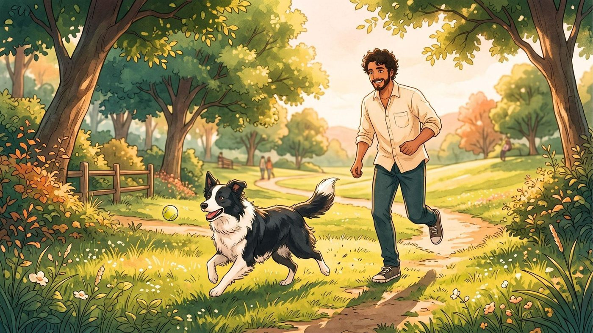
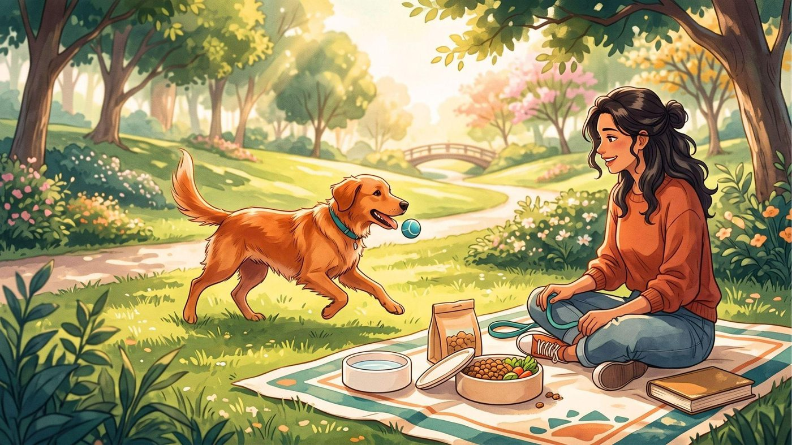
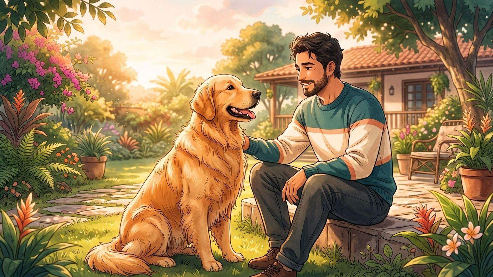
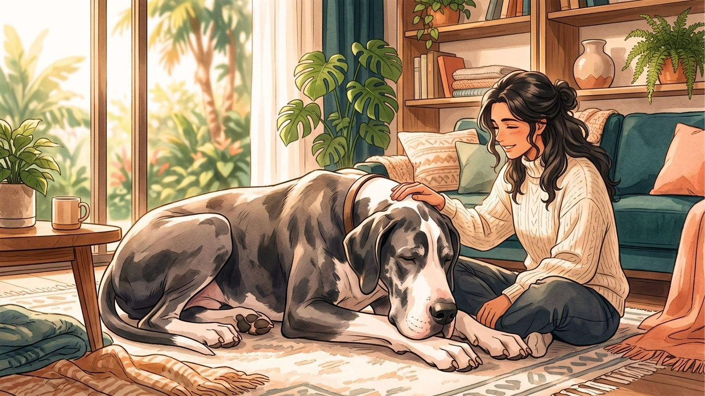
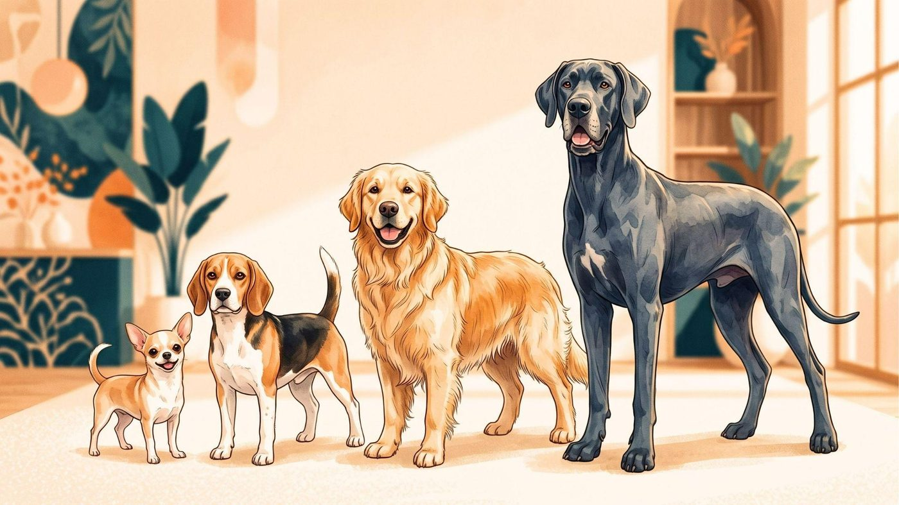
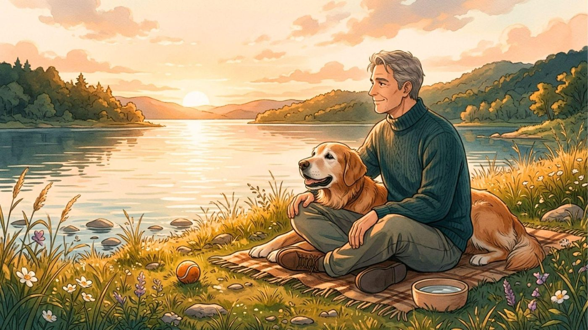

Se eu tivesse que responder essa pergunta com apenas um número, eu provavelmente estaria enganando você.
Um cachorro pequeno pode chegar aos 15, 16 ou até mais anos. Um cão gigante pode envelhecer muito mais rápido e ter uma expectativa consideravelmente menor. Mas existe uma parte dessa história que costuma surpreender: não é apenas a raça que determina quanto tempo um cachorro vai viver — o tamanho corporal tem uma relação muito forte com a longevidade.
E isso muda completamente a forma como eu deveria olhar para a idade do meu cachorro.
Se eu tenho um Chihuahua de 10 anos, por exemplo, não posso enxergá-lo da mesma maneira que enxergaria um Dogue Alemão de 10 anos. Embora os dois tenham exatamente a mesma idade no calendário, eles podem estar em momentos muito diferentes da vida.
Então, afinal, quanto tempo vive um cachorro pequeno, médio, grande ou gigante? E o que eu posso fazer para aumentar as chances de ter mais anos ao lado dele?
1. Quanto tempo vive um cachorro pequeno?
Quando penso nos cães pequenos, existe uma boa notícia: eles geralmente vivem mais tempo que os cães de grande porte.
Como referência geral, cães pequenos costumam viver aproximadamente 10 a 15 anos, e alguns indivíduos ultrapassam os 15 anos. Algumas raças podem chegar perto dos 18 anos em condições favoráveis.
Entre os exemplos de raças pequenas com expectativa relativamente longa estão:
- Chihuahua: aproximadamente 15–17 anos
- Pomeranian: aproximadamente 14–16 anos
- Yorkshire Terrier: aproximadamente 12–15 anos
- Dachshund miniatura: aproximadamente 14 anos de mediana em um grande estudo recente
Mas eu não trataria esses números como uma promessa.
Um estudo publicado na Scientific Reports, analisando 584.734 cães, encontrou uma mediana de sobrevivência de aproximadamente 12,7 anos para cães de pequeno porte. Isso é uma mediana populacional, e não significa que cada cachorro pequeno necessariamente viverá 12 ou 13 anos.
Genética, raça, doenças, peso, alimentação, ambiente e qualidade dos cuidados podem mudar bastante essa história.
2. E os cães de porte médio?

Os cães médios ficam em uma espécie de zona intermediária.
De maneira geral, eu consideraria uma expectativa aproximada de 10 a 13 anos, embora algumas raças e indivíduos possam viver mais.
Border Collies, por exemplo, aparecem entre as raças que podem alcançar uma longevidade relativamente alta. Já outras raças de porte semelhante podem apresentar expectativas menores.
E existe uma coisa interessante aqui: "porte médio" não significa necessariamente uma expectativa igual para todas as raças.
Um Cocker Spaniel, um Border Collie e um Bulldog podem estar dentro de categorias de tamanho semelhantes, mas isso não significa que envelheçam da mesma maneira.
O estudo da Dogs Trust publicado em 2024 reforça justamente essa ideia. Além do tamanho corporal, a longevidade variou significativamente entre raças. No levantamento, a mediana foi de aproximadamente 12,5 anos para cães classificados como médios.
Por isso, quando quero estimar quanto tempo um cachorro pode viver, eu olho primeiro para o porte, mas não paro nele.
3. Quanto tempo vive um cachorro grande?

Aqui começa uma diferença que muitos tutores percebem apenas quando o cão envelhece.
Cães grandes normalmente apresentam uma expectativa de vida menor que os pequenos. Como referência geral, muitos cães de grande porte vivem aproximadamente 8 a 12 anos.
Labradores, Golden Retrievers, Rottweilers e Pastores Alemães estão entre os exemplos de raças grandes que frequentemente aparecem nessa faixa.
Mas novamente existe bastante variação.
No estudo da Dogs Trust, cães classificados como grandes tiveram uma mediana de sobrevivência de aproximadamente 11,9 anos, abaixo das medianas observadas nos grupos pequeno e médio.
Isso explica por que eu preciso prestar atenção aos sinais de envelhecimento de um cachorro grande mais cedo.
Um cão grande de 7 anos pode já estar entrando em uma fase que exige cuidados diferentes, enquanto um cachorro pequeno da mesma idade pode ainda estar bastante ativo.
4. E os cães gigantes? Por que vivem menos?

Essa é talvez a parte mais triste — e mais curiosa — dessa história.
Quando falamos de raças gigantes, como Dogue Alemão, São Bernardo e Mastiff, a expectativa pode cair para algo próximo de 8 a 10 anos, dependendo da raça.
E alguns estudos mostram diferenças ainda mais marcantes entre raças.
No levantamento da Dogs Trust, por exemplo, a mediana estimada foi de 10,6 anos para o Dogue Alemão, enquanto o Mastiff ficou em aproximadamente 9 anos e o Cane Corso em 8,1 anos.
Mas por que um animal maior vive menos dentro da mesma espécie?
A ciência ainda não tem uma explicação única e definitiva.
Uma das hipóteses é que cães grandes crescem muito rapidamente e podem desenvolver doenças relacionadas à idade mais cedo. O câncer, por exemplo, aparece como uma das possíveis explicações para parte dessa diferença.
Pesquisas mais recentes também reforçam que o tamanho corporal é um dos principais fatores associados à longevidade canina.
Em outras palavras: quanto maior o cachorro, em geral, mais cedo precisamos começar a pensar seriamente no envelhecimento.
5. Existe uma tabela de expectativa de vida por porte?

Sim — mas eu usaria a tabela apenas como referência, nunca como previsão individual.
Esses intervalos são aproximações gerais. Estudos populacionais apresentam números diferentes dependendo da amostra, do país, das raças analisadas e da metodologia utilizada.
Um dado particularmente interessante vem de uma análise publicada em 2024 na Scientific Reports, que reuniu informações de mais de meio milhão de cães no Reino Unido. A mediana de sobrevivência foi de 12,7 anos para cães pequenos, 12,5 para médios e 11,9 para grandes.
Isso mostra algo importante: não existe um "relógio" que determina a morte do cachorro quando ele chega a determinada idade.
São tendências populacionais.
Meu cachorro pode fugir completamente da média.
6. O que realmente pode fazer diferença na vida do meu cachorro?

Aqui está a parte que considero mais importante.
Eu não consigo escolher o tamanho ou a genética do cachorro que já tenho. Também não consigo controlar completamente todas as doenças que podem aparecer.
Mas existem aspectos da vida dele que estão sob minha responsabilidade.
Eu posso cuidar do peso corporal, oferecer uma alimentação adequada, manter atividade física compatível com a idade e condição do animal, acompanhar a saúde regularmente e procurar atendimento veterinário quando percebo mudanças.
E eu não esperaria meu cachorro ficar velho para começar a fazer isso.
A própria idade em que um cão passa a ser considerado sênior varia conforme o tamanho. Cães pequenos geralmente entram nessa fase mais tarde, enquanto cães gigantes podem ser considerados idosos já por volta dos 6 ou 7 anos.
Também prestaria atenção a mudanças pequenas:
- Começou a dormir muito mais?
- Perdeu interesse nas brincadeiras?
- Está tendo dificuldade para subir escadas?
- Ganhou ou perdeu peso?
- Passou a beber mais água?
- Está comendo de maneira diferente?
- Parece confuso?
- Ficou mais irritado?
- Está evitando determinadas atividades?
Eu não atribuiria automaticamente essas mudanças à idade.
Envelhecer é natural. Sofrer desnecessariamente não precisa ser.
7. Mais importante que saber quanto ele vai viver é cuidar de como ele vai viver

Depois de pesquisar sobre longevidade canina, uma coisa fica muito clara para mim: a expectativa de vida é uma estatística, não uma sentença.
Meu cachorro pode estar acima ou abaixo da média.
Um Chihuahua pode chegar aos 17 anos. Um cachorro gigante pode viver menos de 10. Mas também existem indivíduos que quebram completamente essas expectativas.
Um estudo recente encontrou diferenças enormes entre raças: algumas apresentaram medianas superiores a 15 anos, enquanto outras ficaram abaixo de 10.
Por isso, se eu tenho um cachorro pequeno, médio, grande ou gigante, eu não usaria a tabela para começar uma contagem regressiva.
Eu usaria a informação para me antecipar às necessidades dele.
Se ele é de grande porte, começo a prestar atenção ao envelhecimento mais cedo. Se é pequeno, sei que provavelmente terei mais anos ao lado dele, mas continuo acompanhando sua saúde. Se é uma raça predisposta a determinados problemas, converso com o veterinário sobre prevenção e acompanhamento.
No final, talvez a pergunta mais importante não seja:
"Quantos anos meu cachorro vai viver?"
Mas:
"O que eu posso fazer hoje para que os anos que ele tiver sejam bons?"
Porque cada passeio, cada brincadeira, cada refeição adequada e cada problema de saúde identificado cedo representam algo que a tabela de expectativa de vida jamais consegue mostrar: a qualidade do tempo que passamos juntos.
Importante: as expectativas apresentadas neste artigo são médias populacionais e não permitem prever quanto tempo um cachorro individual viverá. Genética, raça, tamanho, saúde, peso, ambiente e cuidados veterinários influenciam a longevidade. Para avaliar a saúde e o envelhecimento do seu pet, procure um médico-veterinário.
Fontes e referências
- Longevity of companion dog breeds: those at risk from early death — Scientific Reports (Nature)
- Breed Longevity Infographic 2024 — Dogs Trust
- How Long Do Dogs Live? — American Kennel Club
- Why Do Small Dogs Live Longer? — American Kennel Club
- How to Calculate Dog Years to Human Years — American Kennel Club